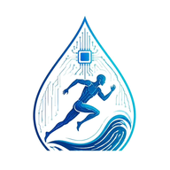

Dernière mise à jour : 21 septembre 2026
La présente politique de confidentialité explique comment PaceDrop collecte, utilise, conserve et protège les données personnelles de ses utilisateurs.
PaceDrop accorde une importance particulière à la protection des données relatives à l'activité sportive, notamment lorsque celles-ci peuvent permettre de déduire certaines informations concernant la santé ou les habitudes de vie.
Le responsable du traitement des données personnelles traitées dans le cadre de PaceDrop est :
Laurent Montagono
71 boulevard de Cessole
06100 Nice
France
Contact : laurent@pacedrop.app
Selon les fonctionnalités que vous utilisez, PaceDrop peut traiter les catégories de données suivantes.
Lorsqu'une activité est importée dans PaceDrop, nous pouvons traiter notamment :
PaceDrop permet actuellement aux utilisateurs d'importer manuellement des fichiers sportifs, notamment au format FIT ou GPX, provenant de leur montre ou de leur équipement sportif.
Le contenu de ces fichiers peut contenir les données sportives et de localisation décrites ci-dessus.
PaceDrop permet actuellement de connecter un compte Strava afin de récupérer certaines données d'activité autorisées par l'utilisateur.
Les données récupérées peuvent notamment comprendre les informations relatives aux activités sportives, telles que la date, la durée, la distance, l'allure, la fréquence cardiaque, le parcours GPS, le dénivelé et les autres informations auxquelles l'utilisateur a autorisé PaceDrop à accéder.
PaceDrop n'accède qu'aux données nécessaires au fonctionnement des fonctionnalités proposées et aux autorisations accordées par l'utilisateur.
PaceDrop peut également traiter certaines données techniques nécessaires au fonctionnement, à la sécurité et à la maintenance du service, notamment :
Certaines données traitées par PaceDrop, notamment la fréquence cardiaque et certaines informations relatives à l'entraînement, peuvent, selon leur nature et leur utilisation, constituer des données susceptibles de révéler des informations concernant la santé.
PaceDrop traite ces données uniquement dans le cadre des fonctionnalités sportives proposées et afin de permettre à l'utilisateur de consulter, analyser et exploiter ses propres données d'entraînement.
Les données personnelles sont traitées pour les finalités suivantes :
Lorsque le traitement porte sur une catégorie particulière de données personnelles au sens de l'article 9 du RGPD, PaceDrop applique une condition de traitement prévue par cet article lorsque celle-ci est nécessaire au regard de la nature du traitement concerné.
PaceDrop utilise une fonctionnalité d'analyse assistée par intelligence artificielle appelée PaceMind afin de générer des analyses et recommandations personnalisées à partir des données d'entraînement de l'utilisateur.
PaceMind utilise actuellement le service Google Gemini API.
Lorsque vous utilisez PaceMind, certaines données nécessaires à la réalisation de l'analyse peuvent être transmises à Google. Ces données peuvent notamment comprendre des informations relatives à vos séances d'entraînement telles que la distance, la durée, l'allure, la fréquence cardiaque, la puissance, la cadence, le dénivelé ou d'autres métriques nécessaires à l'analyse.
PaceDrop cherche à limiter les données transmises au service d'intelligence artificielle aux informations nécessaires à la génération de l'analyse demandée, dans la mesure techniquement possible.
PaceDrop utilise actuellement le niveau sans frais de l'API Gemini. Les conditions de traitement applicables à ce niveau de service peuvent permettre à Google d'utiliser les contenus transmis pour améliorer ses produits et technologies d'intelligence artificielle.
Les modalités exactes de conservation et d'utilisation des données transmises à Google sont celles applicables au service Gemini utilisé par PaceDrop au moment du traitement.
PaceMind est destiné à fournir des informations et recommandations relatives à l'entraînement sportif. Les résultats générés par l'intelligence artificielle peuvent être inexacts et doivent être considérés comme des indications générales.
PaceMind ne constitue pas un dispositif médical et ses résultats ne constituent pas un diagnostic médical, une prescription ou un avis médical.
Les données personnelles peuvent être accessibles, dans la mesure nécessaire aux finalités décrites dans la présente politique, aux catégories de destinataires suivantes :
PaceDrop ne vend pas les données personnelles de ses utilisateurs.
L'utilisation de certains prestataires techniques peut entraîner le traitement de données personnelles en dehors de l'Union européenne ou de l'Espace économique européen.
Lorsque des données personnelles sont transférées vers un pays situé en dehors de l'Union européenne ou de l'Espace économique européen, PaceDrop met en œuvre les garanties prévues par le RGPD applicables au transfert concerné.
Ces garanties peuvent notamment comprendre une décision d'adéquation de la Commission européenne ou, lorsque cela est applicable, des clauses contractuelles types adoptées par la Commission européenne.
Les modalités applicables peuvent dépendre du prestataire utilisé, du service souscrit et de sa configuration technique.
PaceDrop conserve les données personnelles pendant une durée limitée à ce qui est nécessaire aux finalités pour lesquelles elles sont traitées.
Les données du compte et les données sportives associées sont conservées pendant la durée d'utilisation du compte, sauf demande de suppression ou obligation légale imposant une conservation plus longue.
Lorsq'un utilisateur demande la suppression de son compte, PaceDrop supprime ou anonymise les données personnelles concernées dans un délai raisonnable, sous réserve des données dont la conservation est imposée par une obligation légale ou nécessaire à la constatation, à l'exercice ou à la défense de droits en justice.
Les journaux techniques et données de sécurité peuvent être conservés pendant une durée limitée correspondant aux besoins de sécurité, de maintenance et de diagnostic du service.
L'utilisateur peut demander la suppression de son compte PaceDrop et des données personnelles qui y sont associées.
Pour exercer ce droit, il peut contacter PaceDrop à :
Lorsque cela est techniquement disponible, PaceDrop peut également proposer une fonctionnalité permettant à l'utilisateur de supprimer directement son compte depuis l'application.
Conformément à la réglementation applicable, notamment au RGPD, vous disposez, selon les conditions prévues par la réglementation, des droits suivants :
Pour exercer vos droits, vous pouvez contacter :
PaceDrop peut demander les informations nécessaires permettant de vérifier l'identité du demandeur lorsque cela est justifié par la nature de la demande.
Vous disposez également du droit d'introduire une réclamation auprès de la Commission Nationale de l'Informatique et des Libertés (CNIL) si vous estimez que le traitement de vos données personnelles constitue une violation de la réglementation applicable.
PaceDrop permet à l'utilisateur de connecter volontairement son compte Strava à PaceDrop.
Cette connexion repose sur le mécanisme d'autorisation proposé par Strava. L'utilisateur peut refuser l'accès ou retirer ultérieurement l'autorisation accordée à PaceDrop auprès de Strava, selon les fonctionnalités proposées par cette plateforme.
La suppression de l'autorisation Strava empêche les futurs accès autorisés aux données Strava. Les données déjà importées dans PaceDrop peuvent rester enregistrées tant qu'elles n'ont pas été supprimées conformément aux règles de conservation applicables à PaceDrop.
PaceDrop permet actuellement l'import manuel de fichiers sportifs, notamment au format FIT ou GPX.
L'utilisateur est responsable des fichiers qu'il choisit d'importer dans PaceDrop et doit disposer des droits nécessaires pour transmettre les données qu'ils contiennent.
Les fichiers importés peuvent contenir des données de localisation, des informations temporelles et des données relatives à l'activité sportive.
PaceDrop peut utiliser des cookies ou technologies similaires strictement nécessaires au fonctionnement du service, notamment pour maintenir une session utilisateur, assurer l'authentification et renforcer la sécurité.
PaceDrop n'utilise pas de cookies publicitaires destinés à suivre l'utilisateur à des fins de publicité comportementale, sauf modification ultérieure du service.
Si PaceDrop met ultérieurement en place des cookies ou technologies nécessitant le consentement de l'utilisateur, un mécanisme permettant de recueillir ce consentement sera mis en place avant leur utilisation, conformément à la réglementation applicable.
PaceDrop met en œuvre des mesures techniques et organisationnelles destinées à protéger les données personnelles contre la perte, l'accès non autorisé, l'altération, la divulgation ou la destruction.
Les mots de passe des utilisateurs, lorsqu'ils sont utilisés, sont stockés sous une forme hachée et ne sont pas conservés en clair.
Les accès aux données et aux fonctionnalités d'administration sont limités aux personnes ou systèmes qui en ont besoin pour assurer le fonctionnement du service.
Malgré les mesures mises en œuvre, aucun système informatique ne peut garantir une sécurité absolue.
PaceDrop peut analyser les données d'entraînement afin de produire des statistiques, des indicateurs et des recommandations personnalisées concernant la pratique sportive de l'utilisateur.
Ces analyses ont pour objectif d'aider l'utilisateur à comprendre son entraînement et à adapter sa pratique sportive.
Elles ne sont pas destinées à prendre à l'égard de l'utilisateur des décisions produisant des effets juridiques ou des effets significatifs similaires.
À la date de la présente politique, PaceDrop permet notamment l'import manuel de fichiers FIT ou GPX ainsi que la connexion à Strava.
D'autres intégrations avec des services ou fabricants de montres connectées pourront être proposées ultérieurement.
Lorsqu'une nouvelle intégration entraîne un nouveau traitement significatif de données personnelles, la présente politique pourra être mise à jour afin de décrire les données concernées, les finalités, les destinataires et les modalités de traitement applicables.
PaceDrop peut modifier la présente politique de confidentialité afin de tenir compte de l'évolution du service, de ses traitements de données ou de la réglementation applicable.
La date de dernière mise à jour indiquée en haut de cette page permet de connaître la version actuellement applicable.
Pour toute question concernant la présente politique ou le traitement de vos données personnelles, vous pouvez contacter PaceDrop :
Laurent Montagono
71 boulevard de Cessole
06100 Nice
France